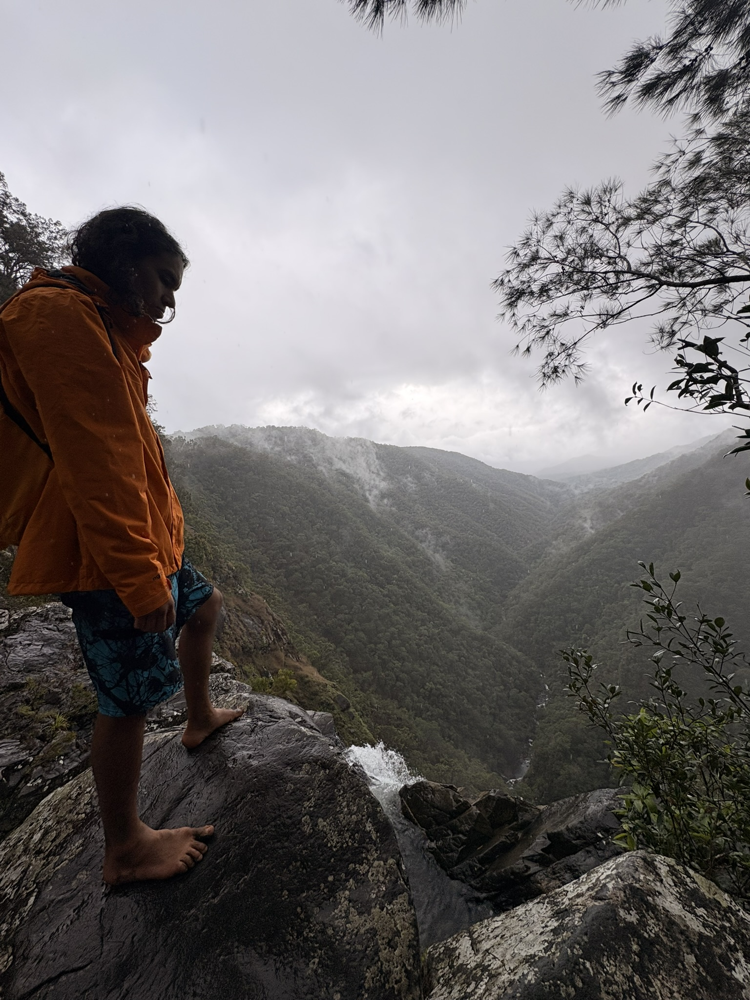

Bridging Environmental Science & IT Innovation
Resourceful and adaptable leader with 5+ years in Natural Resource Management, bushland conservation, and stakeholder engagement — backed by emerging expertise in Linux administration, SQL, data systems, and AI.

A multi-disciplinary approach blending legal background, field operations, and modern data technologies.
With extensive experience at Melbourne Water and Platypus Environmental Services, I have led cross-functional field crews executing large-scale habitat restoration, dynamic risk assessments, and environmental compliance reporting.
I specialize in translating environmental regulations into actionable operational strategies while maintaining zero-incident WHS safety standards.
Currently completing a Graduate Certificate in Information Technology at RMIT University, focusing on database concepts, IT infrastructure, cybersecurity, and programming fundamentals.
Complemented by TAFE NSW and Cisco certifications in Data Centres, SQL, Artificial Intelligence, and AI for Project Management.
Equipped with technical, operational, and interpersonal expertise.
Track record of leadership, environmental stewardship, and project delivery.
Academic degrees, formal qualifications, and continuous tech training.
Database Concepts, IT Infrastructure & Security, Programming Fundamentals.
Legal theory, community advocacy, legal documentation, and negotiation.
• Introduction to Data Centres (2026)
• Introduction to SQL (2025)
• Data Analytics & Artificial Intelligence (2025)
• Introduction to Modern AI (Cisco 2025)
Sustainability policies, climate risk management, and WHS processes.
Artificial Intelligence for Project Managers, Creating Positive Workplaces, Collaborative Leadership.
Mechanical diagnostics, equipment maintenance, and machinery operation.
Interested in discussing Natural Resource Management, IT Systems, or AI applications? Feel free to reach out directly.